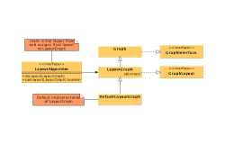
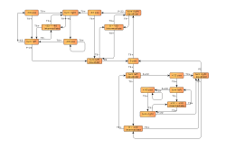
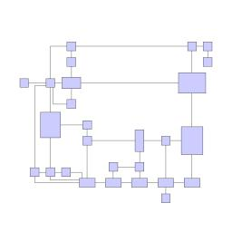
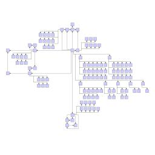
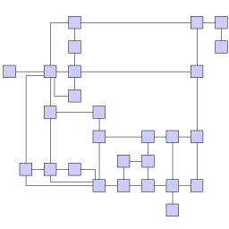
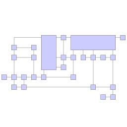
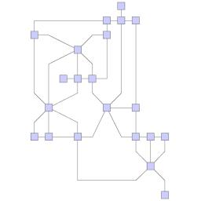

| Orthogonal Layout | ||
|---|---|---|
| Prev | Chapter 5. Automatic Graph Layout | Next |
Class OrthogonalLayouter is
a multi-purpose layout provider for undirected graphs.
It produces clear representations of complex networks and is especially fit for
application areas such as
is
a multi-purpose layout provider for undirected graphs.
It produces clear representations of complex networks and is especially fit for
application areas such as
The orthogonal layout algorithm is based on the topology-shape-metrics approach and consists of three phases. In the first phase the edge crossings in the drawing are calculated. The second phase computes the bends in the drawing, in the third phase the final coordinates are determined.
The layout algorithm is well suited for medium-sized sparse graphs. It produces compact drawings with no overlaps, few crossings, and few bends.
Figure 5.64. Sample layouts produced by class OrthogonalLayouter
|

|

|
| UML class diagram representing a part of the layout interface of yFiles. | This diagram shows finite state automaton from an industrial application. |
Class OrthogonalLayouter knows a number of data provider keys which are used to retrieve supplemental layout data for a graph's elements. The data is bound to the graph by means of a data provider, which is registered using a given look-up key. Table 5.43, “Data provider look-up keys” lists all look-up keys for OrthogonalLayouter.
Binding supplemental layout data to a graph is described in the section called “Providing Supplemental Layout Data”.
Table 5.43. Data provider look-up keys
| Key | Element Type | Value Type | Description |
|---|---|---|---|
| EDGE_LABEL_LAYOUT_KEY |
Edge | LabelLayoutData[] | For each edge an array of LabelLayoutData objects that encode size and preferred placement for all labels of the edge. |
| EDGE_LAYOUT_DESCRIPTOR_DPKEY |
Edge | EdgeLayoutDescriptor |
For each edge an EdgeLayoutDescriptor |
| NODE_HALO_DPKEY |
Node | NodeHalo |
A NodeHalo |
| ABORT_HANDLER_DPKEY |
Graph | AbortHandler |
An AbortHandler |
The global layout style of OrthogonalLayouter is set using the
setLayoutStyle(int) method.
Available options are:
method.
Available options are:
NORMAL_STYLE |
|
| Description | Node sizes will not be changed by this layouter. The drawing will contain very few bends only. |
NORMAL_TREE_STYLE |
|
| Description | Same as "Normal," but larger subtrees are processed using a specialized tree layout algorithm, which is better suited for tree-like structures than the original orthogonal layout style. |
UNIFORM_STYLE |
|
| Description | All node sizes will be changed to equal size before the graph is processed. |
BOX_STYLE |
|
| Description | Nodes are resized according to the number and position of their neighbors to reduce the overall number of bends. |
MIXED_STYLE |
|
| Description | Resembles "Box," but resizes all nodes to equal size. Introduces additional bends and routes the last edge segment of these edges non-orthogonally to their adjacent nodes. |
FIXED_MIXED_STYLE |
|
| Description | Proceeds similar to layout style "Mixed," but maintains original node sizes. |
FIXED_BOX_STYLE |
|
| Description | Proceeds similar to layout style "Box," but maintains original node sizes. |
Figure 5.65. Sample layouts for the available orthogonal layout styles
|

|

|

|
| NORMAL_STYLE |
NORMAL_TREE_STYLE |
UNIFORM_STYLE |
|

|

|
| BOX_STYLE |
MIXED_STYLE |
| Grid | |
| API | void setGrid(int gridSpacing) |
| Description | Defines the virtual grid spacing used by the layout algorithm. Each node will be placed in such a way that its center point lies on a grid point. Edges will be routed in such a way that their segments lie on grid lines, if the terminal nodes of the edges allow to place the ports accordingly. Note that this option is only guaranteed to be obeyed for "Normal Layout Style," for all other styles it is used as a hint only. |
| Length Reduction | |
| API | void setUseLengthReduction(boolean reduceLength) |
| Description | If enabled, the overall edge lengths will be reduced. The cost for the reduction is an increased execution time of the layout algorithm. |
| Optimize Perceived Bends | |
| API | void setPerceivedBendsOptimizationEnabled(boolean enabled) |
| Description | If enabled, avoids helical arrangement of chains of nodes. |
| Use Existing Drawing as Sketch | |
| API | void setUseSketchDrawing(boolean useSketch) |
| Description | If enabled, the layout algorithm will interpret the initial graph layout as a sketch of the resulting orthogonal layout. The layout algorithm tries to "orthogonalize" the given sketch without making too much modifications in respect to the original drawing. |
| Crossing Postprocessing | |
| API | void setUseCrossingPostprocessing(boolean crossingPostprocessing) |
| Description | If enabled, the overall number of edge crossings will be reduced. The cost for the reduction is increased execution time of the layouter. |
| Use Randomization | |
| API | void setUseRandomization(boolean useRandomization) |
| Description | If enabled, the overall layout quality will increase with high probability. The cost for this layout optimization is increased execution time and non-deterministic results for subsequent layout invocations. |
Class EdgeLayoutDescriptor can
be used to specify further edge-related layout options.
An instance of this class is held by OrthogonalLayouter to store and retrieve default
values for edges.
can
be used to specify further edge-related layout options.
An instance of this class is held by OrthogonalLayouter to store and retrieve default
values for edges.
OrthogonalLayouter provides access to the default EdgeLayoutDescriptor instance through:
| Edge Layout Descriptor | |
| API | EdgeLayoutDescriptor getEdgeLayoutDescriptor() |
| Description | Edge-related layout options. |
In addition to the instance held directly by OrthogonalLayouter, layout descriptors can also be associated with single edges in order to specify individual settings for them. Setting individual descriptors for edges is done through a data provider that is bound to the graph. See Related Classes.
In addition to these options, OrthogonalLayouter by default also supports node halos
as soon as they are declared using the data provider key NODE_HALO_DPKEY .
.
See the section called “Orthogonal Layout of Grouped Graphs” on how to calculate an orthogonal style layout of a grouped graph.
Besides the generic labeling support as described in the section called “Generic Labeling”, which is available with all yFiles layout algorithms, the orthogonal layout algorithm additionally supports integrated labeling. Furthermore, it can also be set up to take node labels into account during layout.
Integrated labeling is available for edge labels and can be used in conjunction with layout style "Normal." They are taken into consideration when determining both node placement and edge path generation. With this strategy it is guaranteed that no edge label will overlap other objects in the diagram.
Integrated labeling can be enabled or disabled using the following setter method:
boolean isIntegratedEdgeLabelingEnabled() |
|
| Description | Determines whether integrated labeling is enabled. |
See also the section called “Integrated Labeling”.
Optimal label placement with integrated labeling can be achieved using FreeEdgeLabelModel as the label model for the edges.
As explained in the section called “Label Models”, this edge label model is ideally
suited in combination with integrated labeling and yields the best match for a label
location that is computed by OrthogonalLayouter.
as the label model for the edges.
As explained in the section called “Label Models”, this edge label model is ideally
suited in combination with integrated labeling and yields the best match for a label
location that is computed by OrthogonalLayouter.
OrthogonalLayouter provides support for node label-aware orthogonal layout. Node labels do not need to be placed, but instead their size needs to be considered for the placement of adjacent graph elements. Taking node labels into consideration during layout calculation guarantees that they will not overlap nodes in the diagram.
| Consider Node Labels | |
| API | void setConsiderNodeLabelsEnabled(boolean enabled) |
| Description | Enables node label-aware layout calculation. |
Class EdgeLayoutDescriptor can
be used to configure edge-related layout options.
The following options can be set for edges:
can
be used to configure edge-related layout options.
The following options can be set for edges:
| Minimum Length of First and Last Segment | |
| API | void setMinimumFirstSegmentLength(double length) |
| Description | Determine the minimum length of the first (at the source) and last (at the target) edge segment. |
An EdgeLayoutDescriptor instance can be specified individually for single edges
by means of a data provider that is bound to the graph.
The data provider is expected to be registered with the graph using key
EDGE_LAYOUT_DESCRIPTOR_DPKEY .
In the absence of an individual descriptor for an edge, the default EdgeLayoutDescriptor
instance that is registered with OrthogonalLayouter will be used.
.
In the absence of an individual descriptor for an edge, the default EdgeLayoutDescriptor
instance that is registered with OrthogonalLayouter will be used.
The following table lists the data provider look-up keys that are recognized by OrthogonalLayouter in conjunction with individual layout settings for edges.
Table 5.44. Data provider look-up keys
| Key | Element Type | Value Type | Description |
|---|---|---|---|
| EDGE_LAYOUT_DESCRIPTOR_DPKEY |
Edge | EdgeLayoutDescriptor |
For each edge an EdgeLayoutDescriptor |
In tutorial demo application EntityRelationshipDemo.java individual EdgeLayoutDescriptor instances are used to specify the minimum length of the first/last edge segment in relation to the length of the arrowhead at that end.
Table 5.45, “Layout Stages” lists layout stages that can be used to enhance the layout process of class OrthogonalLayouter.
Table 5.45. Layout Stages
| Classname | Description |
|---|---|
| PolylineLayoutStage |
With class OrthogonalLayouter as the core layouter, this stage adds octilinear edge routing to the diagram that results from the orthogonal layout calculation. |
Layout module OrthogonalLayoutModule.java presents the setup of class OrthogonalLayouter in an application context.
In tutorial demo application EntityRelationshipDemo.java individual EdgeLayoutDescriptor instances are used to specify the minimum length of the first/last edge segment in relation to the length of the arrowhead at that end.
The running time of orthogonal layout can be reduced by disabling some of the optimization settings.
For example, turning off the "Crossing Postprocessing" option can have a substantial effect on the run-time, especially when the graph has many edge crossings. Disabling further settings, like, e.g., "Optimize Perceived Bends," or "Length Reduction" also reduces execution time.
|
Copyright ©2004-2015, yWorks GmbH. All rights reserved. |